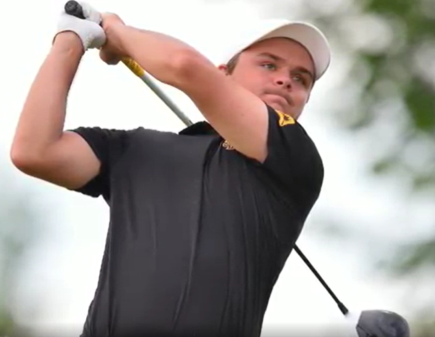
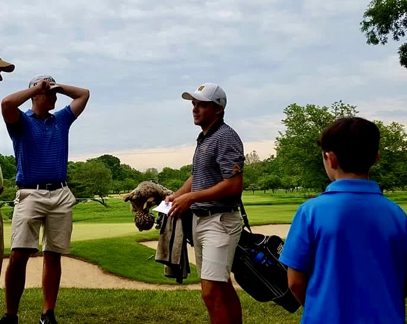
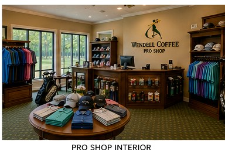

Wendell Coffee · Founder & PGA Professional
A championship legacy.
Wendell established the center in 1991 and continues to shape its tradition of public golf, practical instruction and personal hospitality.
Explore Wendell’s career →Championship instruction, a scenic nine-hole par-3 course, a nationally recognized grass practice range and memorable lakeside events—about 15 minutes southwest of Atlanta’s airport.
Wendell established the center in 1991 and continues to shape its tradition of public golf, practical instruction and personal hospitality.
Explore Wendell’s career →
Connor leads lessons, camps and Event Center inquiries while helping build the next chapter of the Coffee family legacy.
Explore instruction →Weddings, private celebrations, corporate gatherings, showers, reunions and milestone events across the Event Center, Clubhouse and lakeside grounds.
Explore weddings & events →Private instruction, junior golf, camps, clinics and player development led by Connor Coffee and shaped by a championship golf family.
Explore instruction →A scenic nine-hole par-3 course and grass practice facility designed for relaxed rounds, purposeful practice and golfers of every level.
Explore golf & practice →
Connor is the primary contact for lessons, junior camps, clinics and player-development programs. Call or text (678) 365-9943.
Host a wedding, reception, corporate meeting, reunion, shower, birthday, anniversary or celebration of life. Outside catering is permitted, and catering coordination is available for events.

Browse new and used clubs, balls, gloves, junior sets, bags, accessories and gift certificates. One-day re-gripping, rental sets and gift certificates are also available.
